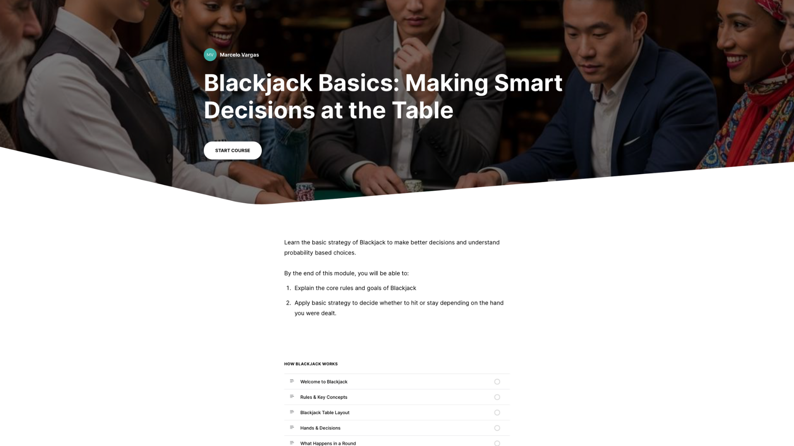

Create conditions for learning
Create conditions for learning by applying theories to authentic scenarios involving diverse populations.
Featured Artifact

Interactive Blackjack Strategy Module
This interactive module teaches the basic rules and goals of Blackjack and guides learners in applying basic strategy to decide whether to hit or stay based on the hand they are dealt. The module combines short explanations, step-by-step examples, and scenario-based practice where learners make decisions and immediately see the consequences of their choices. The goal is to help learners connect intuitive decision-making with probability-informed strategies in a low-stakes, game-based environment.
Designing the module allowed me to create conditions for learning by intentionally applying learning theories to an authentic decision-making scenario. I built in scaffolds such as simplified examples, gradually increasing complexity, and targeted feedback so that learners can safely try out strategies, make mistakes, and correct their thinking. I also considered diverse learners by balancing text with visuals and interactivity, and by pacing information so that users can revisit explanations as needed. This artifact demonstrates my ability to design an experience where theory, practice, and learner engagement work together to support understanding.
Launch Module